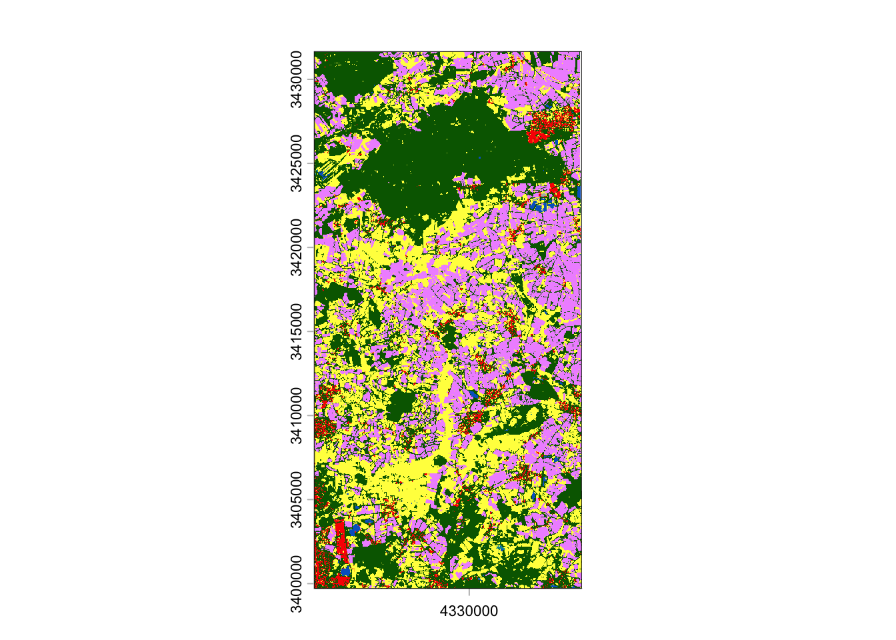
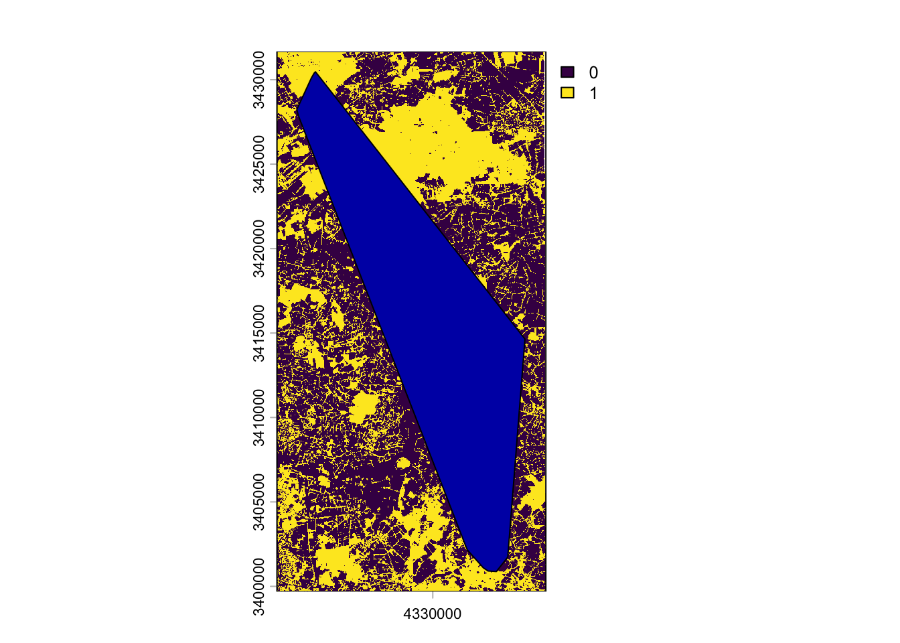
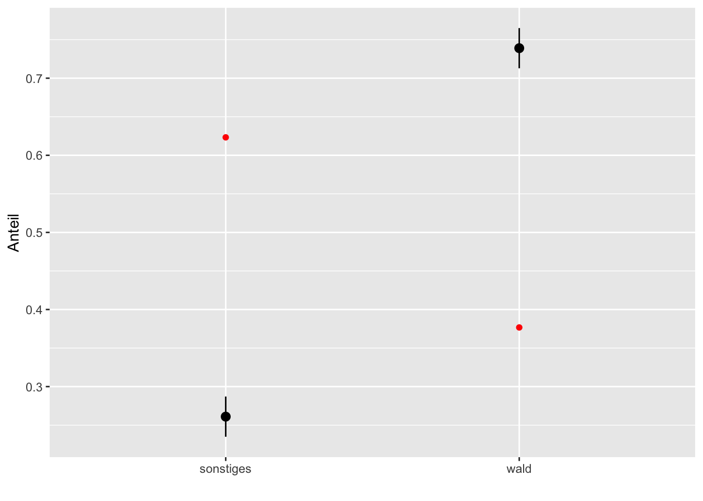
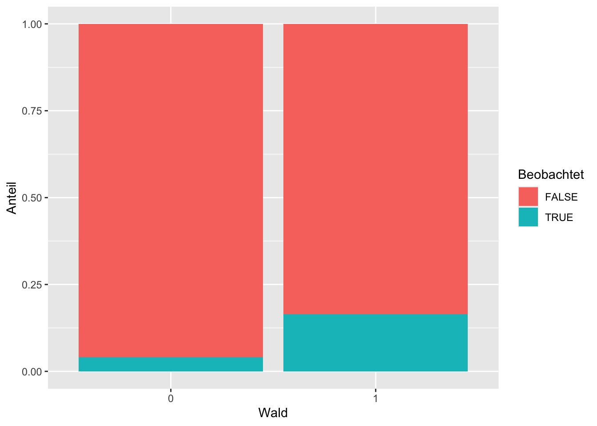
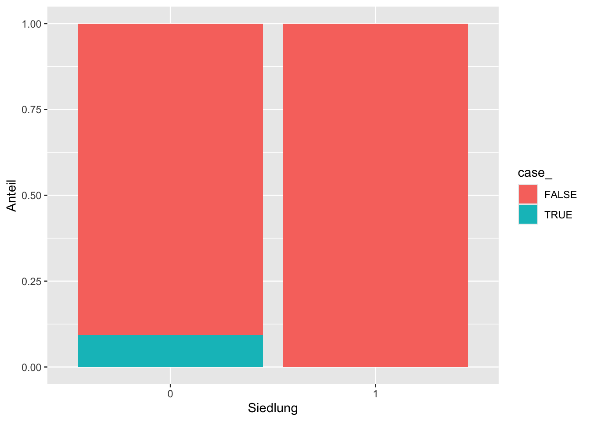
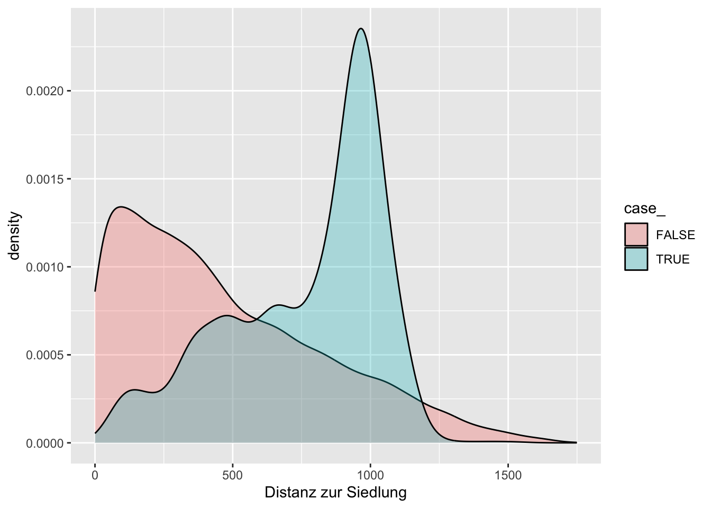
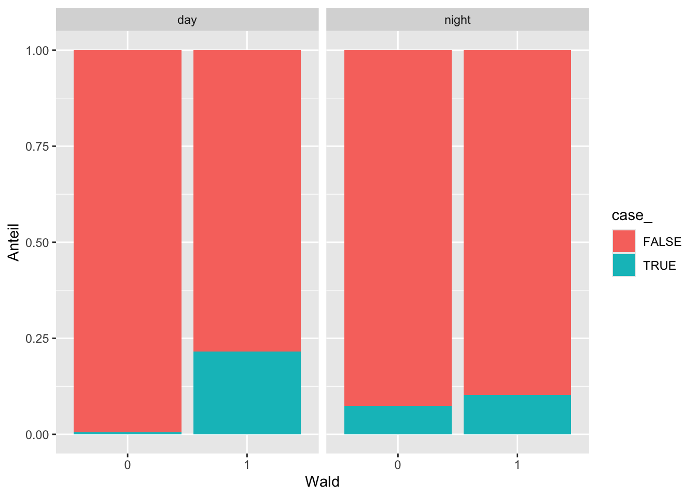

![]()
library(terra)
library(tidyverse)
library(amt)Übung Einheit 11 und 12 (Woche 13 und 14): Habitatselektion
Jacobs-Index, χ²-Test und Resource Selection Functions mit amt
Hintergrund
In dieser Übung analysieren wir die Habitatselektion von Rotwild (Cervus elaphus) anhand von GPS-Telemetriedaten und einer Landbedeckungskarte. Wir berechnen zunächst den Jacobs-Index und einen χ²-Test, um zu prüfen, ob Wald präferiert oder gemieden wird. Anschließend passen wir eine Resource Selection Function (RSF) an — ein logistisches Regressionsmodell, das beobachtete Positionen mit zufällig gezogenen Hintergrundpunkten vergleicht.
Die Daten sind bei StudIP unter uebungen/woche_14_rsf/ verfügbar:
landcover.tif— Landbedeckungsraster (ESA WorldCover, 10 m Auflösung, EPSG:3035)reddeer.csv— GPS-Positionen eines Rotwildindividuums (EPSG:3035)
Die Landbedeckungsklassen im Raster sind:
| Wert | Klasse |
|---|---|
| 10 | Wald |
| 30 | Grünland |
| 40 | Ackerland |
| 50 | Bebauung |
| 60 | Offenboden / spärliche Vegetation |
| 80 | Gewässer |
| 90 | Feuchtgebiet |
Teil 1: Daten einlesen und Kovariaten erstellen
Bevor wir Habitatselektion berechnen können, müssen wir das Landbedeckungsraster laden und daraus thematische Kovariaten ableiten. Wir erstellen drei Kovariaten:
- Wald (binär: 1 = Wald, 0 = kein Wald)
- Siedlung (binär: 1 = bebaut, 0 = nicht bebaut)
- Distanz zur Siedlung (kontinuierlich, in Metern)
Die Funktion distance() aus terra berechnet für jede Rasterzelle die Distanz zur nächsten Zelle mit einem bestimmten Wert. Dazu müssen alle anderen Zellen zuvor auf NA gesetzt werden.
Aufgaben
Laden Sie das Landbedeckungsraster (
landcover.tif) mitrast()und stellen Sie es mitplot()dar.Erstellen Sie die drei Kovariaten
wald,siedlungunddsiedlungwie im Coderahmen gezeigt. Fassen Sie alle drei mitrast(list(...))zu einem gemeinsamen Raster-Stack zusammen und vergeben Sie die Namen"wald","siedlung"und"dsiedlung".Lesen Sie die Telemetriedaten (
reddeer.csv) ein und erstellen Sie mitmake_track()einen Track (CRS: EPSG:3035).
# 1: Landbedeckungsraster laden
lc <- rast(___)
plot(lc)
# 2a: Binäre Kovariate Wald (Klasse 10)
wald <- as.numeric(lc == ___)
# 2b: Binäre Kovariate Siedlung (Klasse 50)
siedlung <- as.numeric(lc == ___)
# 2c: Distanz zur nächsten Siedlungszelle
# Zuerst alle Nicht-Siedlungs-Zellen auf NA setzen, dann distance() anwenden
dsiedlung <- siedlung
dsiedlung[] <- ifelse(dsiedlung[], ___, NA)
dsiedlung <- distance(___)
# 2d: Zu einem Raster-Stack zusammenfassen
env <- rast(list(___, ___, ___))
names(env) <- c("wald", "siedlung", "dsiedlung")
# 3: Telemetriedaten einlesen und Track erstellen
deer <- read_csv("daten/reddeer.csv")
deer <- make_track(deer, ___, ___, ___, crs = ___)
Lösungsvorschlag
# 1: Landbedeckungsraster laden
lc <- rast("daten/landcover.tif")
plot(lc)
# 2a: Binäre Kovariate Wald (Klasse 10)
wald <- as.numeric(lc == 10)
# 2b: Binäre Kovariate Siedlung (Klasse 50)
siedlung <- as.numeric(lc == 50)
# 2c: Distanz zur nächsten Siedlungszelle
dsiedlung <- siedlung
dsiedlung[] <- ifelse(dsiedlung[], 1, NA)
dsiedlung <- distance(dsiedlung)
# 2d: Zu einem Raster-Stack zusammenfassen
env <- rast(list(wald, siedlung, dsiedlung))
names(env) <- c("wald", "siedlung", "dsiedlung")
# 3: Telemetriedaten einlesen und Track erstellen
deer <- read_csv("daten/reddeer.csv")
deer <- make_track(deer, x_, y_, t_, crs = 3035)Teil 2: Jacobs-Index für Wald
Der Jacobs-Index \(D_i\) quantifiziert, ob eine Habitatklasse präferiert (\(D > 0\)) oder gemieden (\(D < 0\)) wird:
\[D_i = \frac{r_i - p_i}{r_i + p_i - 2\,r_i\,p_i}\]
wobei \(r_i\) der Anteil genutzter Punkte in Klasse \(i\) und \(p_i\) der Anteil verfügbarer Fläche ist.
Als verfügbares Habitat definieren wir das MCP-Streifgebiet (100 %-Isopleth) des Tieres. Das genutzte Habitat sind die beobachteten GPS-Positionen.
Aufgaben
Berechnen Sie das MCP-Streifgebiet (
hr_mcp(),levels = 1) und extrahieren Sie das Isopleths-Polygon mithr_isopleths(). Stellen Sie das Streifgebiet über dem Waldlayer dar.Schneiden Sie den
wald-Raster mitcrop()undmask()auf das Streifgebiet zu. Berechnen Sie die Anteile der Klassen (0/1) im verfügbaren Habitat mitprop.table(table(...)).Extrahieren Sie für jede Tierposition den Waldwert mit
extract_covariates()und berechnen Sie die Anteile im genutzten Habitat.Berechnen Sie den Jacobs-Index für Wald mit der Funktion
ji()aus dem Coderahmen.
# 1: MCP-Streifgebiet berechnen und darstellen
hr1 <- hr_isopleths(hr_mcp(deer, levels = ___))
plot(wald)
plot(hr1, add = TRUE)
# 2: Raster auf Streifgebiet zuschneiden und Verfügbarkeit berechnen
verf <- mask(crop(___, hr1), hr1)
p_v <- prop.table(table(verf[]))
p_v
# 3: Kovariaten für beobachtete Punkte extrahieren und Nutzung berechnen
t1 <- extract_covariates(deer, ___)
p_g <- prop.table(table(t1$___))
p_g
# 4: Jacobs-Index berechnen
ji <- function(genutzt, verfuegbar) {
(genutzt - verfuegbar) / (genutzt + verfuegbar - 2 * genutzt * verfuegbar)
}
gv <- data.frame(
was = c("sonstiges", "wald"),
verf = c(p_v),
gen = c(p_g)
)
gv$ji <- ji(gv$___, gv$___)
gv
Lösungsvorschlag
# 1: MCP-Streifgebiet berechnen und darstellen
hr1 <- hr_isopleths(hr_mcp(deer, levels = 1))
plot(wald)
plot(hr1, add = TRUE)
# 2: Raster auf Streifgebiet zuschneiden und Verfügbarkeit berechnen
verf <- mask(crop(wald, hr1), hr1)
p_v <- prop.table(table(verf[]))
p_v
0 1
0.6232771 0.3767229 # 3: Kovariaten für beobachtete Punkte extrahieren und Nutzung berechnen
t1 <- extract_covariates(deer, wald)
p_g <- prop.table(table(t1$ESA_WorldCover_10m_2021_V200_N51E009_Map))
p_g
0 1
0.2610526 0.7389474 # 4: Jacobs-Index berechnen
ji <- function(genutzt, verfuegbar) {
(genutzt - verfuegbar) / (genutzt + verfuegbar - 2 * genutzt * verfuegbar)
}
gv <- data.frame(
was = c("sonstiges", "wald"),
verf = c(p_v),
gen = c(p_g)
)
gv$ji <- ji(gv$gen, gv$verf)
gv was verf gen ji
0 sonstiges 0.6232771 0.2610526 -0.6480869
1 wald 0.3767229 0.7389474 0.6480869Teil 3: χ²-Test und Konfidenzintervalle
Der Jacobs-Index liefert eine Effektgröße, sagt aber nichts über statistische Signifikanz. Mit einem χ²-Test können wir prüfen, ob die beobachtete Verteilung der Punkte auf die Habitatklassen von der erwarteten Verteilung (= Verfügbarkeit) abweicht. Zusätzlich berechnen wir Bonferroni-korrigierte Konfidenzintervalle für den Anteil jeder Klasse.
Aufgaben
Fügen Sie dem
data.framegvaus Teil 2 eine Spaltegen_nhinzu (absolute Anzahl genutzter Punkte pro Klasse =gen × nrow(t1)). Führen Sie dannchisq.test()durch — übergeben Sie die absoluten Häufigkeiten alsxund die Verfügbarkeitsanteile alsp.Berechnen Sie Bonferroni-korrigierte 95 %-Konfidenzintervalle für den Anteil jeder Klasse. Das Quantil der Standardnormalverteilung ergibt sich aus
qnorm(1 - 0.05 / (2 * m)), wobei \(m\) die Anzahl der Klassen ist. Der Fehlerspielraum ist \(z \cdot \sqrt{\hat{p}(1-\hat{p})/n}\).Stellen Sie das Ergebnis grafisch dar: Zeigen Sie Anteile mit Konfidenzintervallen als
geom_pointrange()und die Verfügbarkeit als roten Punkt (geom_point(aes(y = verf), col = "red")). Überlappen die Konfidenzintervalle die Verfügbarkeitswerte?
# 1: χ²-Test
gv$gen_n <- nrow(t1) * gv$___
chisq.test(___, p = ___)
# 2: Bonferroni-Konfidenzintervalle
m <- nrow(gv) # Anzahl Klassen
z <- qnorm(1 - 0.05 / (2 * ___))
fb <- z * sqrt((gv$gen * (1 - gv$gen)) / nrow(t1))
gv$lci <- gv$gen - ___
gv$uci <- gv$gen + ___
gv
# 3: Grafische Darstellung
ggplot(gv, aes(was, gen)) +
geom_pointrange(aes(ymin = ___, ymax = ___)) +
geom_point(aes(y = ___), col = "red") +
labs(x = "", y = "Anteil")
Lösungsvorschlag
# 1: χ²-Test
gv$gen_n <- nrow(t1) * gv$gen
chisq.test(gv$gen_n, p = gv$verf)
Chi-squared test for given probabilities
data: gv$gen_n
X-squared = 796.28, df = 1, p-value < 2.2e-16# 2: Bonferroni-Konfidenzintervalle
m <- nrow(gv)
z <- qnorm(1 - 0.05 / (2 * m))
fb <- z * sqrt((gv$gen * (1 - gv$gen)) / nrow(t1))
gv$lci <- gv$gen - fb
gv$uci <- gv$gen + fb
gv was verf gen ji gen_n lci uci
0 sonstiges 0.6232771 0.2610526 -0.6480869 372 0.2349741 0.2871312
1 wald 0.3767229 0.7389474 0.6480869 1053 0.7128688 0.7650259# 3: Grafische Darstellung
ggplot(gv, aes(was, gen)) +
geom_pointrange(aes(ymin = lci, ymax = uci)) +
geom_point(aes(y = verf), col = "red") +
labs(x = "", y = "Anteil")
Teil 4: Jacobs-Index für Siedlung (Aufgabe)
Wiederholen Sie die Analyse aus den Teilen 2 und 3 für die Kovariate Siedlung.
Hinweis: Bei der Berechnung von p_g für Siedlung kann es sein, dass im genutzten Habitat keine Siedlungspixel vorkommen. In diesem Fall enthält p_g nur eine Klasse (0). Passen Sie die Erstellung von gv entsprechend an (z. B. gen = c(p_g[1], 1 - p_g[1])).
# Verfügbarkeit für Siedlung berechnen
verf_s <- mask(crop(___, hr1), hr1)
p_v_s <- prop.table(table(verf_s[]))
# Nutzung für Siedlung extrahieren
t1_s <- extract_covariates(deer, ___)
p_g_s <- prop.table(table(t1_s$___))
# data.frame zusammenstellen (Achtung: ggf. fehlende Klasse in p_g_s)
gv_s <- data.frame(
was = c("sonstiges", "siedlung"),
verf = c(p_v_s),
gen = c(p_g_s[1], 1 - p_g_s[1])
)
gv_s$ji <- ji(gv_s$___, gv_s$___)
gv_s
Lösungsvorschlag
# Verfügbarkeit für Siedlung berechnen
verf_s <- mask(crop(siedlung, hr1), hr1)
p_v_s <- prop.table(table(verf_s[]))
# Nutzung für Siedlung extrahieren
t1_s <- extract_covariates(deer, siedlung)
p_g_s <- prop.table(table(t1_s$ESA_WorldCover_10m_2021_V200_N51E009_Map))
# data.frame zusammenstellen
gv_s <- data.frame(
was = c("sonstiges", "siedlung"),
verf = c(p_v_s),
gen = c(p_g_s[1], 1 - p_g_s[1])
)
gv_s$ji <- ji(gv_s$gen, gv_s$verf)
gv_s was verf gen ji
0 sonstiges 0.97948619 1 1
1 siedlung 0.02051381 0 -1Teil 5: Resource Selection Function (RSF)
Der Jacobs-Index und der χ²-Test erlauben nur die Analyse einer binären Kovariate auf einmal. Eine RSF ist ein logistisches Regressionsmodell, das gleichzeitig mehrere Kovariaten berücksichtigen und deren relative Bedeutung schätzen kann.
Das Prinzip: Wir ziehen zufällige Hintergrundpunkte aus dem verfügbaren Habitat (mit random_points()), versehen alle Punkte (beobachtet + zufällig) mit Kovariaten, und modellieren den binären Response case_ (TRUE = beobachtet, FALSE = zufällig) mit glm(..., family = binomial()).
Aufgaben
Erstellen Sie zufällige Hintergrundpunkte mit
random_points()und versehen Sie diese zusammen mit den Tierbeobachtungen mit allen Kovariaten ausenv(extract_covariates()). Stellen Sie die Verteilung der Kovariatewaldmitgeom_bar()dar — einmal für beobachtete und zufällige Punkte getrennt (fill = case_,position = "fill").Stellen Sie analog die Verteilungen für
siedlungunddsiedlungdar. Was fällt auf?Passen Sie zwei Modelle an:
m1:case_ ~ wald + siedlungm2:case_ ~ wald + dsiedlung
Vergleichen Sie beide mit
AIC(). Welches Modell passt besser?Erstellen Sie ein drittes Modell
m2amitlog1p(dsiedlung)stattdsiedlung. Begründen Sie kurz, warum eine logarithmische Transformation sinnvoll sein kann. Vergleichen Sie alle drei Modelle mitAIC().
# 1: Zufällige Punkte und Kovariaten
rp <- deer |> random_points()
rp <- rp |> extract_covariates(___)
# Verteilung Wald
rp |> ggplot(aes(factor(___), fill = ___)) +
geom_bar(position = "fill") +
labs(x = "Wald", y = "Anteil", fill = "Beobachtet")
# 2: Verteilung Siedlung und Distanz zur Siedlung
rp |> ggplot(aes(factor(___), fill = case_)) +
geom_bar(position = "fill") +
labs(x = "Siedlung", y = "Anteil")
rp |> ggplot(aes(___, fill = case_)) +
geom_density(alpha = 0.3) +
labs(x = "Distanz zur Siedlung")
# 3: Modelle anpassen und mit AIC vergleichen
m1 <- glm(case_ ~ wald + siedlung, data = rp, family = binomial())
m2 <- glm(case_ ~ wald + dsiedlung, data = rp, family = binomial())
AIC(___, ___)
# 4: Modell mit log1p-Transformation
m2a <- glm(case_ ~ wald + log1p(___), data = rp, family = binomial())
AIC(___, ___, ___)
summary(m2a)
Lösungsvorschlag
# 1: Zufällige Punkte und Kovariaten
rp <- deer |> random_points()
rp <- rp |> extract_covariates(env)
# Verteilung Wald
rp |> ggplot(aes(factor(wald), fill = case_)) +
geom_bar(position = "fill") +
labs(x = "Wald", y = "Anteil", fill = "Beobachtet")
# 2: Verteilung Siedlung und Distanz zur Siedlung
rp |> ggplot(aes(factor(siedlung), fill = case_)) +
geom_bar(position = "fill") +
labs(x = "Siedlung", y = "Anteil")
rp |> ggplot(aes(dsiedlung, fill = case_)) +
geom_density(alpha = 0.3) +
labs(x = "Distanz zur Siedlung")
# 3: Modelle anpassen und mit AIC vergleichen
m1 <- glm(case_ ~ wald + siedlung, data = rp, family = binomial())
m2 <- glm(case_ ~ wald + dsiedlung, data = rp, family = binomial())
AIC(m1, m2) df AIC
m1 3 8830.412
m2 3 8405.657# 4: Modell mit log1p-Transformation
# log1p vermeidet log(0) und gewichtet kleine Distanzen stärker
m2a <- glm(case_ ~ wald + log1p(dsiedlung), data = rp, family = binomial())
AIC(m1, m2, m2a) df AIC
m1 3 8830.412
m2 3 8405.657
m2a 3 8171.138summary(m2a)
Call:
glm(formula = case_ ~ wald + log1p(dsiedlung), family = binomial(),
data = rp)
Coefficients:
Estimate Std. Error z value Pr(>|z|)
(Intercept) -9.01950 0.30190 -29.88 <2e-16 ***
wald 1.16509 0.06579 17.71 <2e-16 ***
log1p(dsiedlung) 0.97891 0.04756 20.58 <2e-16 ***
---
Signif. codes: 0 '***' 0.001 '**' 0.01 '*' 0.05 '.' 0.1 ' ' 1
(Dispersion parameter for binomial family taken to be 1)
Null deviance: 9550.3 on 15674 degrees of freedom
Residual deviance: 8165.1 on 15672 degrees of freedom
AIC: 8171.1
Number of Fisher Scoring iterations: 6Teil 6: RSF mit Tageszeit (Zusatzaufgabe)
In diesem Teil erweitern wir das RSF-Modell um die Tageszeit als Interaktionsterm. Die Idee: Tiere könnten tagsüber und nachts unterschiedliche Habitate bevorzugen.
Für die Zufallspunkte ist keine echte Uhrzeit vorhanden — wir weisen ihnen deshalb zufällig Tag oder Nacht zu (sample(c("day", "night"), ...)). Für die beobachteten Punkte verwenden wir time_of_day() aus amt.
Aufgaben
Erstellen Sie den kombinierten Datensatz
datwie im Coderahmen gezeigt (Zufallspunkte mit zufälliger Tageszeit + beobachtete Punkte mit berechneter Tageszeit). Stellen Sie die Verteilung der Kovariatewaldgetrennt nach Tageszeit mitfacet_wrap(~ tod_)dar.Passen Sie ein Modell mit Interaktionstermen an:
m3a:case_ ~ wald + wald:tod_ + log1p(dsiedlung) + log1p(dsiedlung):tod_
Vergleichen Sie
m3amitm2aaus Teil 5 mitAIC(). Verbessert die Berücksichtigung der Tageszeit die Modellanpassung?
# 1: Datensatz mit Tageszeit zusammenstellen
dat <- bind_rows(
# Zufallspunkte: Tageszeit zufällig zuweisen
deer |> random_points() |> filter(!case_) |>
mutate(tod_ = sample(c("day", "night"), size = n(), replace = TRUE)) |>
extract_covariates(env),
# Beobachtete Punkte: Tageszeit aus Zeitstempel berechnen
deer |> time_of_day() |> dplyr::select(-t_) |>
mutate(case_ = TRUE) |>
extract_covariates(env)
)
# Verteilung Wald nach Tageszeit
dat |> ggplot(aes(factor(___), fill = case_)) +
geom_bar(position = "fill") +
facet_wrap(~ ___) +
labs(x = "Wald", y = "Anteil")
# 2: Modell mit Interaktionstermen
m3a <- glm(case_ ~ wald + wald:___ + log1p(dsiedlung) + log1p(dsiedlung):___,
data = dat, family = binomial())
AIC(___, ___)
summary(m3a)
Lösungsvorschlag
# 1: Datensatz mit Tageszeit
dat <- bind_rows(
deer |> random_points() |> filter(!case_) |>
mutate(tod_ = sample(c("day", "night"), size = n(), replace = TRUE)) |>
extract_covariates(env),
deer |> time_of_day() |> dplyr::select(-t_) |>
mutate(case_ = TRUE) |>
extract_covariates(env)
)
# Verteilung Wald nach Tageszeit
dat |> ggplot(aes(factor(wald), fill = case_)) +
geom_bar(position = "fill") +
facet_wrap(~ tod_) +
labs(x = "Wald", y = "Anteil")
# 2: Modell mit Interaktionstermen
m3a <- glm(case_ ~ wald + wald:tod_ + log1p(dsiedlung) + log1p(dsiedlung):tod_,
data = dat, family = binomial())
AIC(m2a, m3a) df AIC
m2a 3 8171.138
m3a 5 7783.024summary(m3a)
Call:
glm(formula = case_ ~ wald + wald:tod_ + log1p(dsiedlung) + log1p(dsiedlung):tod_,
family = binomial(), data = dat)
Coefficients:
Estimate Std. Error z value Pr(>|z|)
(Intercept) -9.37707 0.30558 -30.69 <2e-16 ***
wald 3.26302 0.17677 18.46 <2e-16 ***
log1p(dsiedlung) 0.76032 0.04820 15.77 <2e-16 ***
wald:tod_night -3.27868 0.19965 -16.42 <2e-16 ***
tod_night:log1p(dsiedlung) 0.37139 0.02804 13.24 <2e-16 ***
---
Signif. codes: 0 '***' 0.001 '**' 0.01 '*' 0.05 '.' 0.1 ' ' 1
(Dispersion parameter for binomial family taken to be 1)
Null deviance: 9550.3 on 15674 degrees of freedom
Residual deviance: 7773.0 on 15670 degrees of freedom
AIC: 7783
Number of Fisher Scoring iterations: 7